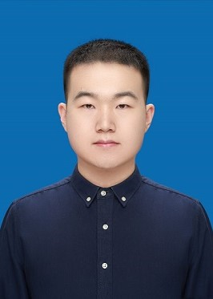

Zijian Zhang (张子健)
|  | Assistant Professor |
About me
I am an assistant professor at the College of Computer Science and Technology, Jilin University.
Prior to this position, I completed my Doctoral degree at Jilin University and earned a Joint Ph.D. degree from the City University of Hong Kong in 2024, under the supervision of Prof. Hongwei Zhao and Prof. Xiangyu Zhao.
From Sep 2023 to Sep 2024, I worked as a research intern at Kuaishou Technology under the supervision of Dr. Shuchang Liu and Dr. Qingpeng Cai.
🔥 The lab has several positions for master's and doctoral students every year. We also warmly welcome undergraduate research assistants to join us. The lab provides sufficient computing resources and financial support. Students interested in machine learning and data mining are welcome to join us. Please email me and attach your recent CV or other materials.
My research interests include:
AI for Urban Application: Spatio-temporal data mining, time series analysis, urban region profiling, human mobility analytics, and intelligent traffic systems;
Recommender Systems: LLM-enhanced recommendation, federated optimization, multi-domain and multi-objective recommendation, and long-term user engagement modeling;
Trustworthy AI: LLM-enhanced reasoning, physic-informed AI, disentangled representation learning, model transparency, robustness, and generalization;
Large Language Models: LLM-powered applications, LLM agents, knowledge distillation, and multi-modal learning;
News
1/2025: I will serve as the PC Member of SIGIR'25
12/2024: 3 papers got accepted in AAAI'25
12/2024: I will serve as the PC Member of WWW'25
12/2024: Our tutorial about human mobility analytics got accepted in WWW'25
11/2024: I will serve as the PC Member of IJCAI'25
11/2024: 1 paper got accepted in TOIS
09/2024: 1 paper got accepted in NeurIPS'24
09/2024: 1 paper got accepted in ICDM'24
08/2024: I passed my Ph.D. defense!
08/2024: I will serve as the PC Member of ICLR'25
07/2024: 1 paper got accepted in RecSys'24
07/2024: 1 paper got accepted in CIKM'24
07/2024: I will serve as the PC Member of KDD'25
06/2024: I will serve as the PC Member of AAAI'25
05/2024: I was invited to give a talk on common pattern modeling of spatio-temporal data mining at EduHK
05/2024: 3 papers got accepted in KDD'24
04/2024: 2 papers got accepted in SIGIR'24
04/2024: 1 paper got accepted in IJCAI'24
03/2024: I will serve as the PC Member of CIKM'24
02/2024: I will serve as the PC Member of KDD'24
01/2024: 1 paper got accepted in WWW'24
12/2023: I will serve as the PC Member of IJCAI'24
10/2023: Chaired the main session Session 9A - Urban Informatics 3 at CIKM'23
09/2023: Received the CIKM'23 student travel grant
09/2023: 1 paper got accepted in Neural Networks
08/2023: 4 papers (1 short paper) got accepted in CIKM'23
07/2023: I will serve as the PC Member of AAAI'24
04/2023: 1 paper got accepted in IJCAI'23
02/2023: I was invited to present our spatio-temporal multi-task learning paper at Hong Kong Institute for Data Science
02/2023: Chaired the technical session DMKM: Mining of Spatial, Temporal or Graph Data at AAAI'23
02/2023: I was invited to present our spatio-temporal multi-task learning paper at BAAI(智源社区)
01/2023: 2 papers got accepted in WWW'23
12/2022: Received the AAAI'23 student travel award and will serve as volunteer
11/2022: 1 paper got accepted in AAAI'23
08/2022: 1 paper got accepted in CIKM'22
05/2022: 1 paper got accepted in Applied Intelligence
12/2021: Joined Applied Machine Learning Lab in CityU as a 'JLU-CityU' Joint Ph.D. student
09/2021: Joined JLU as a Ph.D. student of Computer Application Technology
Research Publications
( * indicates equal contribution, # indicates corresponding author.)Tutorials
-
Web-Centric Human Mobility Analytics: Methods, Applications, and Future Directions in the LLM Era
Zijian Zhang, Hao Miao, Yuxuan Liang, Yan Zhao, Xiao Han, Pengyue Jia, Bin Yang, Christian S. Jensen
The Web Conference 2025 (WWW' 25) (CCF A)
-
LLM-Powered User Simulator for Recommender System
Zijian Zhang, Shuchang Liu, Ziru Liu, Rui Zhong, Qingpeng Cai, Xiangyu Zhao, Chunxu Zhang, Qidong Liu, Peng Jiang
The 39th AAAI Conference on Artificial Intelligence (AAAI' 25) (CCF A) -
GARLIC: GPT-Augmented Reinforcement Learning with Intelligent Control for Vehicle Dispatching
Xiao Han, Zijian Zhang, Xiangyu Zhao, Yuanshao Zhu, Guojiang Shen, Xiangjie Kong, Xuetao Wei, Liqiang Nie, Jieping Ye
The 39th AAAI Conference on Artificial Intelligence (AAAI' 25) (CCF A) -
Multifaceted User Modeling in Recommendation: A Federated Foundation Models Approach
Chunxu Zhang, Guodong Long, Hongkuan Guo, Zhaojie Liu, Guorui Zhou, Zijian Zhang, Yang Liu, Bo Yang
The 39th AAAI Conference on Artificial Intelligence (AAAI' 25) (CCF A) -
LLM-ESR: Large Language Models Enhancement for Long-tailed Sequential Recommendation
Qidong Liu, Xian Wu, Xiangyu Zhao, Yejing Wang, Zijian Zhang, Feng Tian, Yefeng Zheng
The 38th Annual Conference on Neural Information Processing Systems (NeurIPS' 24) (CCF A) -
GPRec: Bi-level User Modeling for Deep Recommender Systems
Yejing Wang, Dong Xu, Xiangyu Zhao, Zhiren Mao, Peng Xiang, Ling Yan, Yao Hu, Zijian Zhang, Xuetao Wei, Qidong Liu
The 24th International Conference on Data Mining (ICDM' 24) (CCF B) -
DNS-Rec: Data-aware Neural Architecture Search for Recommender Systems
Sheng Zhang, Maolin Wang, Xiangyu Zhao, Ruocheng Guo, Yao Zhao, Chenyi Zhuang, Jinjie Gu, Zijian Zhang, Hongzhi Yin
The 18th ACM Conference on Recommender Systems (RecSys' 24) (CCF B) -
Efficient and Robust Regularized Federated Recommendation
Langming Liu, Wanyu Wang, Xiangyu Zhao, Zijian Zhang#, Chunxu Zhang, Shanru Lin, Yiqi Wang, Lixin Zou, Zitao Liu, Xuetao Wei, Hongzhi Yin, Qing Li
The 33rd ACM International Conference on Information and Knowledge Management (CIKM' 24) (CCF B) -
GPFedRec: Graph-Guided Personalization for Federated Recommendation
Chunxu Zhang, Guodong Long, Tianyi Zhou, Zijian Zhang, Peng Yan, Bo Yang
The 30th ACM SIGKDD Conference on Knowledge Discovery and Data Mining (Research Track) (KDD' 24) (CCF A) -
ControlTraj: Controllable Trajectory Generation with Topology-Constrained Diffusion Model
Yuanshao Zhu, James Jianqiao Yu, Xiangyu Zhao, Qidong Liu, Yongchao Ye, Wei Chen, Zijian Zhang, Xuetao Wei, Yuxuan Liang
The 30th ACM SIGKDD Conference on Knowledge Discovery and Data Mining (Research Track) (KDD' 24) (CCF A) -
Modeling User Retention through Generative Flow Networks
Ziru Liu, Shuchang Liu, Bin Yang, Zhenghai Xue, Qingpeng Cai, Xiangyu Zhao, Zijian Zhang, Lantao Hu, Han Li, Peng Jiang
The 30th ACM SIGKDD Conference on Knowledge Discovery and Data Mining (Applied Data Science Track) (KDD' 24) (CCF A) -
M3oE: Multi-Domain Multi-Task Mixture-of Experts Recommendation Framework
Zijian Zhang, Shuchang Liu, Jiaao Yu, Qingpeng Cai, Xiangyu Zhao, Chunxu Zhang, Ziru Liu, Qidong Liu, Hongwei Zhao, Lantao Hu, Peng Jiang, Kun Gai
The 47th International ACM SIGIR Conference on Research and Development in Information Retrieval (SIGIR' 24) (CCF A) -
Sequential Recommendation for Optimizing Both Immediate Feedback and Long-term Retention
Ziru Liu, Shuchang Liu, Zijian Zhang, Qingpeng Cai, Xiangyu Zhao, Kesen Zhao, Lantao Hu, Peng Jiang, Kun Gai
The 47th International ACM SIGIR Conference on Research and Development in Information Retrieval (SIGIR' 24) (CCF A) -
Federated Adaptation for Foundation Model-based Recommendations
Chunxu Zhang, Guodong Long, Hongkuan Guo, Xiao Fang, Yang Song, Zhaojie Liu, Guorui Zhou, Zijian Zhang, Yang Liu, Bo Yang
The 33rd International Joint Conference on Artificial Intelligence (IJCAI' 24) (CCF A) -
When Federated Recommendation Meets Cold-Start Problem: Separating Item Attributes and User Interactions
Chunxu Zhang, Guodong Long, Tianyi Zhou, Zijian Zhang, Peng Yan, Bo Yang
The Web Conference 2024 (WWW' 24) (CCF A) -
PromptST: Prompt-Enhanced Spatio-Temporal Multi-Attribute Prediction
Zijian Zhang, Xiangyu Zhao, Qidong Liu, Chunxu Zhang, Qian Ma, Wanyu Wang, Hongwei Zhao, Yiqi Wang, Zitao Liu
The 32nd ACM International Conference on Information and Knowledge Management (CIKM' 23) (CCF B) -
Rethinking Sensors Modeling: Hierarchical Information Enhanced Traffic Forecasting
Qian Ma*, Zijian Zhang*, Xiangyu Zhao, Haoliang Li, Hongwei Zhao, Yiqi Wang, Zitao Liu, Wanyu Wang
The 32nd ACM International Conference on Information and Knowledge Management (CIKM' 23) (CCF B) -
MLPST: MLP is All You Need for Spatio-Temporal Prediction
Zijian Zhang*, Ze Huang*, Zhiwei Hu*, Xiangyu Zhao, Wanyu Wang, Zitao Liu, Junbo Zhang, S. Joe Qin, Hongwei Zhao
The 32nd ACM International Conference on Information and Knowledge Management (CIKM' 23) (CCF B) -
Counterfactual-Consistent Adversarial Learning for Recommender Systems
Jialin Liu, Zijian Zhang, Xiangyu Zhao, Jun Li
The 32nd ACM International Conference on Information and Knowledge Management (CIKM' 23), Short Paper (CCF B) -
Dual Personalization on Federated Recommendation
Chunxu Zhang, Guodong Long, Tianyi Zhou, Peng Yan, Zijian Zhang, Chengqi Zhang, Bo Yang
The 32nd International Joint Conference on Artificial Intelligence (IJCAI' 23) (CCF A) -
MMMLP: Multi-modal Multilayer Perceptron for Sequence Recommendation
Jiahao Liang, Xiangyu Zhao, Muyang Li, Zijian Zhang, Haochen Liu, Liu Zitao
The Web Conference 2023 (WWW' 23) (CCF A) -
AutoMLP: Automated MLP for Sequential Recommendations
Muyang Li*, Zijian Zhang*, Xiangyu Zhao, Minghao Zhao, Runze Wu, Ruocheng Guo
The Web Conference 2023 (WWW' 23) (CCF A) -
AutoSTL: Automated Spatio-Temporal Multi-Task Learning
Zijian Zhang, Xiangyu Zhao, Hao Miao, Chunxu Zhang, Hongwei Zhao, Junbo Zhang
The 37th AAAI Conference on Artificial Intelligence (AAAI' 23) (CCF A) -
MAE4Rec: Storage-saving Transformer for Sequential Recommendations
Kesen Zhao, Xiangyu Zhao, Zijian Zhang, Muyang Li
The 31st ACM International Conference on Information and Knowledge Management (CIKM' 22) (CCF B)
-
A Contrastive Pretrain Model with Prompt Tuning forMulti-center Medication Recommendation
Qidong Liu, Zhaopeng Qiu, Xiangyu Zhao, Xian Wu, Zijian Zhang, Tong Xu, Feng Tian
ACM Transactions on Information Systems (CCF A, IF = 5.4) -
LaenNet: Learning robust GCNs by propagating labels
Chunxu Zhang, Ximing Li, Hongbin Pei, Zijian Zhang, Bing Liu, Bo Yang
Neural Networks. Sep, 2023, pp. 652-664. (JCR Q1, IF = 7.8) -
BO-Aug: Learning Data Augmentation Policies via Bayesian Optimization
Chunxu Zhang, Ximing Li, Zijian Zhang, Jiaxu Cui, Bo Yang
Applied Intelligence. Aug, 2022, pp. 1-16. (JCR Q2, IF = 5.019)
Service
Program Committee Member:International Conference on Learning Representations (ICLR 2025)
ACM SIGIR Conference on Research and Development in Information Retrieval (SIGIR 2025)
The Web Conference (WWW 2025)
AAAI Conference on Artificial Intelligence (AAAI 2024-2025)
ACM SIGKDD Conference on Knowledge Discovery and Data Mining (KDD 2024-2025)
International Joint Conference on Artificial Intelligence (IJCAI 2024-2025)
ACM International Conference on Information and Knowledge Management (CIKM 2024)
IEEE Transactions on Knowledge and Data Engineering (TKDE)
IEEE Transactions on Cybernetics (TCYB)
IEEE Transactions on Neural Networks and Learning Systems (TNNLS)
ACM Transactions on Information Systems (TOIS)
ACM Transactions on Knowledge Discovery from Data (TKDD)
ACM Transactions on Intelligent Systems and Technology (TIST)
Information Fusion
Education
Joint Ph.D., School of Data Science, City University of Hong Kong, 2022-2024
Ph.D., College of Computer Science and Technology, Jilin University, 2021-2024
M.E., College of Computer Science and Technology, Jilin University, 2018-2021
B.E., College of Computer Science and Technology, Jilin University, 2014-2018
Awards
[2023] Jilin Bank Wang-Xianghao Scholarship, Jilin University
[2023] First class "QiuShi" scholarship, Jilin University
[2023] Outstanding Graduate Student, Jilin University
[2023] First class graduate merit scholarship, Jilin University
[2023] CIKM 2023 Travel Grants
[2023] AAAI 2023 Student Scholarship
[2022] Second place in Carbon Neutral Competition track of 3rd Shandong Data Competition
[2021] Outstanding Graduating Post-Graduate Student, Jilin University
[2020] Second prize of "Huawei Cup" The 17th China Post-Graduate Mathematical Contest
[2019] Scholarship of outstanding post-graduate, Jilin University
[2019] Academic performance scholarship of post-graduate, Jilin University
[2018] Third class scholarship, Jilin University
[2018] College Excellent Student, Jilin University
[2016] First prize in Jilin Province of Contemporary Undergraduate Mathematical Contest